Brouilly 2009

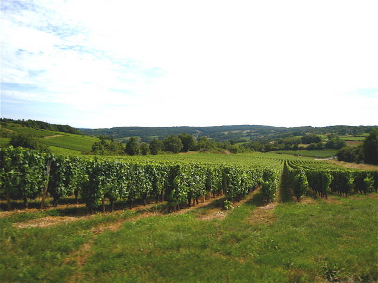
Brouilly, c'est dans le Sud du Beaujolais, au niveau de Villefranche. Pour y arriver, je traverse la Bourgogne et ses beaux paysages prometteurs !

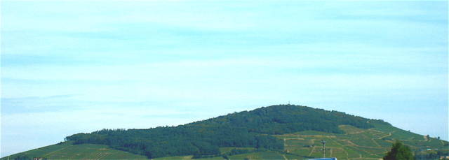
J'arrive en vue du Mont Brouilly où les festivités se déroulaient les années précédentes. Mais c'était un peu loin pour le public et le festival a lieu maintenant à Cercié, dans la vallée...

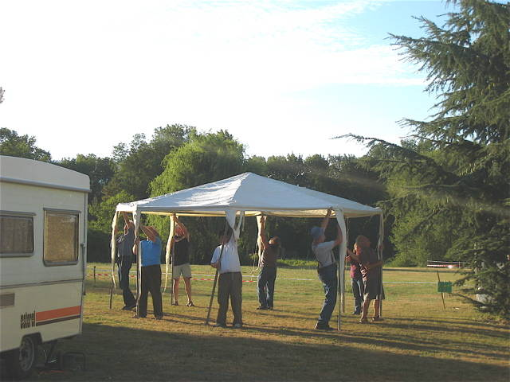
Le vendredi, activité traditionnelle : on monte les barnums. Gaby en possède de solides, mais lourds, et il faut d'abord bien trier les tubes...

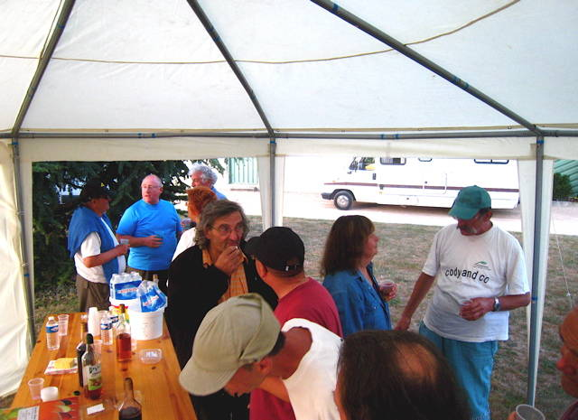
Les barnums montés, il faut un peu de décontraction : on va commencer à goûter le Brouilly et des préparations annexes, comme les Kir à divers parfums : cassis, bien sûr, mais aussi châtaigne, mirabelle, myrtille, etc.

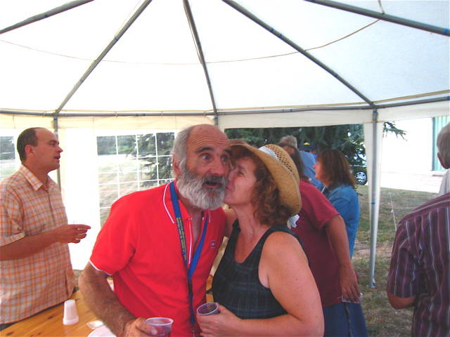
La charmante Mireille, la fille de Gaby, est toujours de la fête, et on espère que ça durera : un peu sérieuse à la première édition, elle est de plus en plus souriante au fil des années !

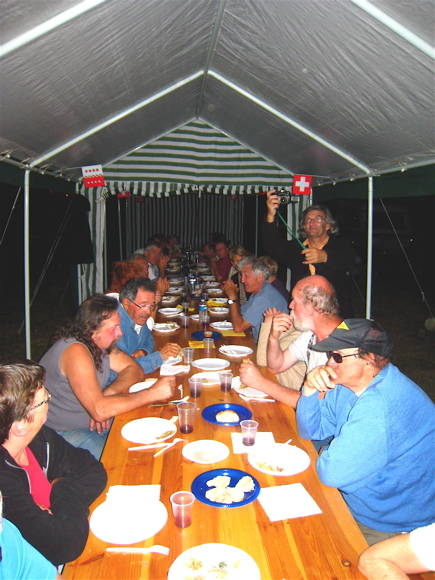
Vendredi soir, dîner sous la tente... Toutes les tables en long, ça facilite les échanges et la convivialité...

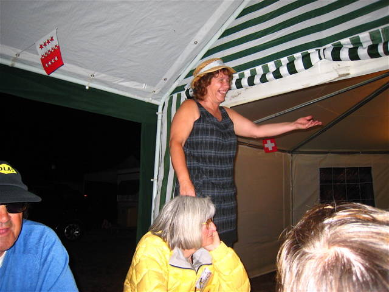
Mireille monte à la tribune pour un vibrant hommage (si on peut dire) aux cuisiniers !

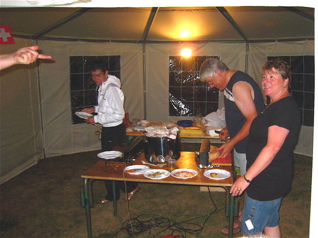
Les cuisiniers, ce sont les Suisses d'Element-Air, qui ont amené les tomates, les patates, les appareils à raclette... et le fromage indispensable ! Un grand merci à eux !

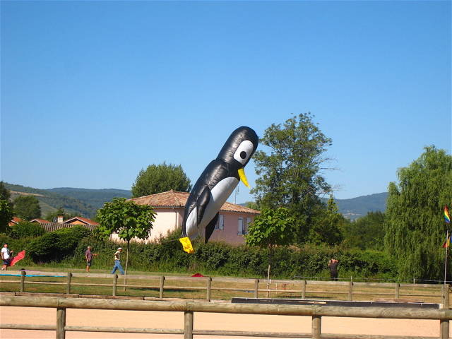
Samedi matin, vent nul ! Joël en profite pour sortir son grand pingouin solaire qui fera un bon petit vol avant que le vent ne se lève...

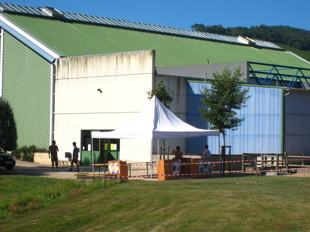
De leur côté, les vignerons ont monté un stand... derrière le gymnase, où le public ne passe jamais ! Comprenne qui pourra... au moins ils seront tranquilles pour le déjeuner et la pétanque !

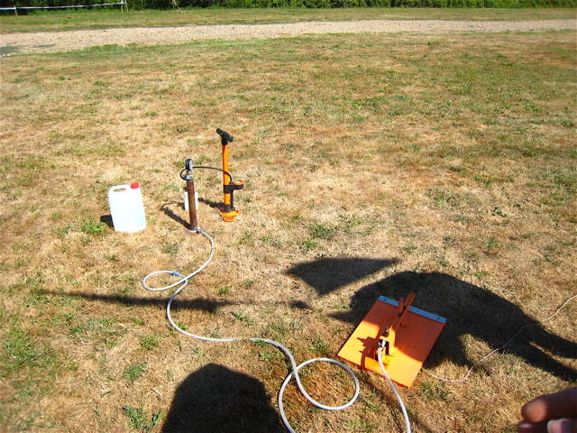
Monsieur Orsenigo, CVCF à 2 chiffres, a monté son pas de tir de fusées à eau ! Il ne manquera pas de volontaires pour pomper !

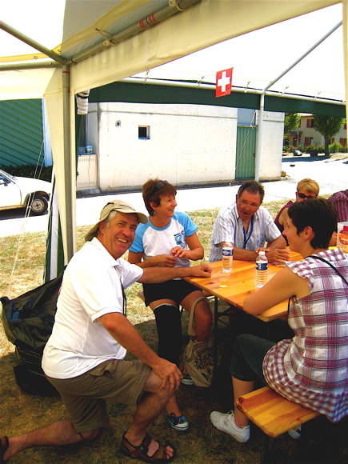
Avec la chaleur, les hostilités se calment vite, et on passe à table ! Jean-Pierre met un genou en terre pour rendre hommage aux belles cervolistes...

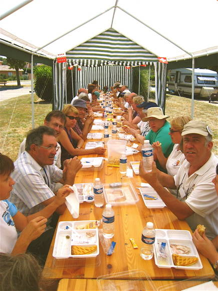
Pause déjeuner, donc : cherchez la grosse différence avec le dîner d'hier : regardez bien la table, et les bouteilles... d'eau ! Sans doute la chaleur, ou plutôt pour bon nombre, une compensation à la sur-consommation d'hier soir !

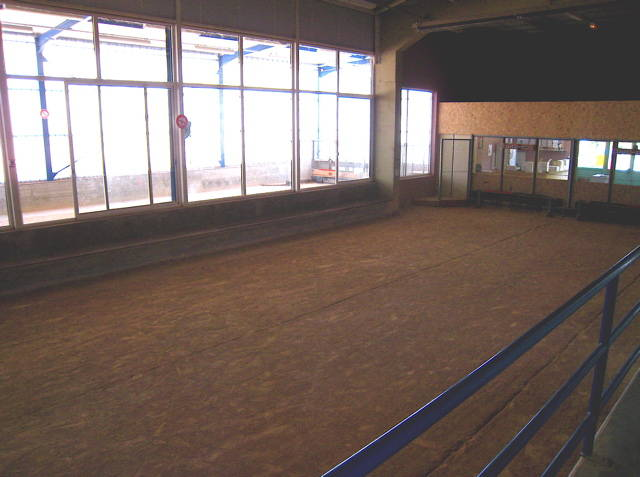
Un peu dépité par la perte de ma Manta ultra-légère accrochée en haut d'un arbre (elle y est toujours...) quand le vent est monté, je ne ferai pas beaucoup de photos aujourd'hui... Seulement, au frais, l'intérieur du gymnase qui comprend deux pistes de Boule lyonnaise, la Longue, qui se joue avec de grosses boules et 3 pas d'élan...

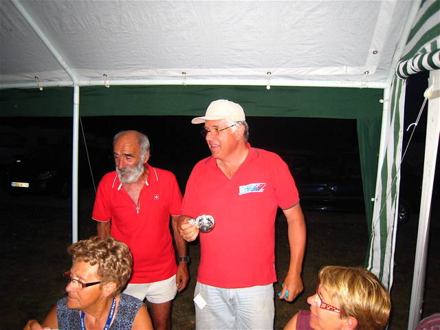
Au soir, Bernard, qui avait été intronisé chevalier de la confrérie des Côtes de Brouilly il y a 4 ans, reçoit pour ses bons services, le tastevin d'honneur qui récompense la fidélité à la cause vinicole...

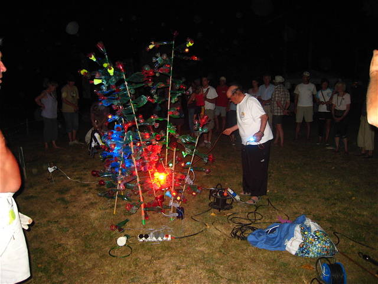
Après le dîner, une petite visite à Néné qui a monté et illuminé ses cactus dans toutes les couleurs de l'arc-en-ciel...

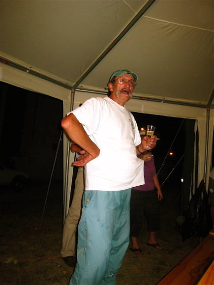
Retour à la tente pour fêter l'anniversaire (un gamin, 57 ans) du Cody and Co majeur et de sa belle moustache...

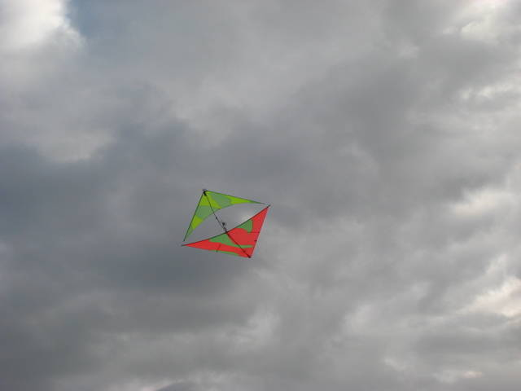
Dimanche matin, toujours vent nul... Pourtant, on voit un cerf-volant là-haut ! Ca alors, un autre adepte de l'indoor ? Mais c'est bien haut !

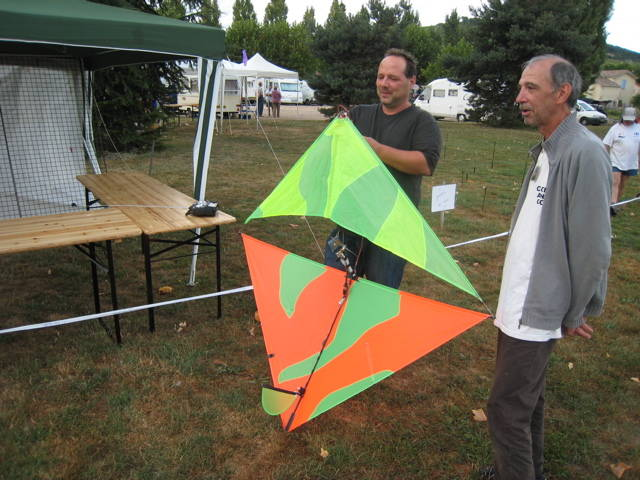
En fait, c'est un Suisse qui a motorisé un Pfalz (très peu différent du Marconi, la différence est principalement une seule voile avant au lieu de 2 demies ?), et télécommande la chose ! Il commande seulement la puissance et la direction au moyen de la petite dérive supérieure, mais c'est bien suffisant !

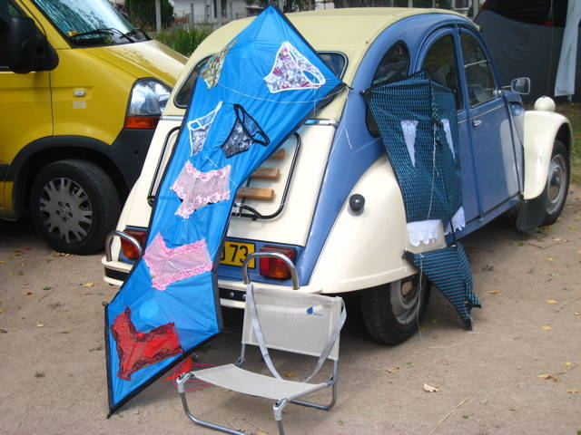
Une cervoliste que je ne connaissais pas, de Savoie, je crois : Sylvie à la 2CV... Elle a réalisé des cerfs-volants... bien féminins !

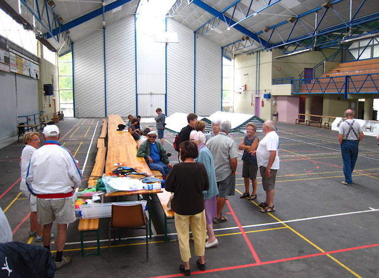
Un grain passe, avec un gros coup de vent ! Ma grue, que j'avais sortie, finit sur le toit du gymnase mais descendra après de gentilles sollicitations... On se réfugie dans le gymnase... même les barnums y rentrent !

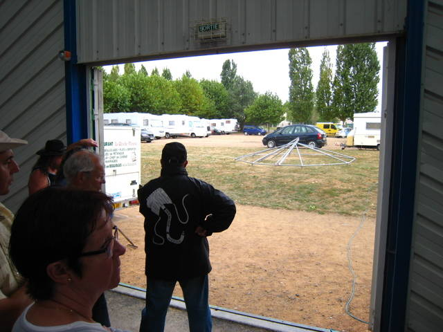
Les barnums ont résisté plus longtemps que celui des vignerons, mais on les a quand même rapidement détoilés par précaution...

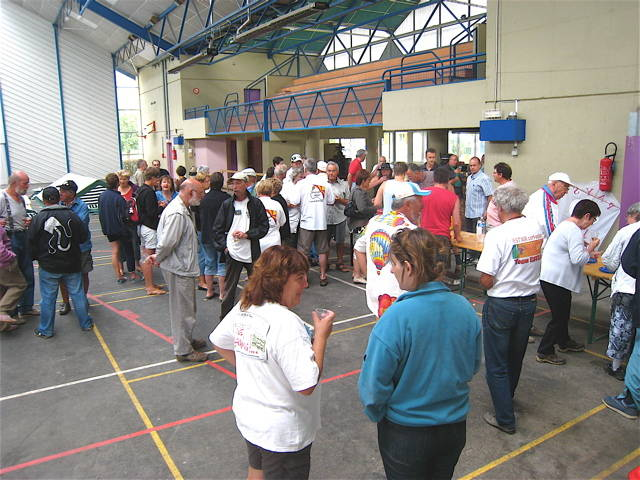
Ce midi, ce sont les vignerons qui régalent, un grand merci ! Pour patienter, un petit apéritif pour ceux qui ont encore soif : il fait de plus en plus chaud !

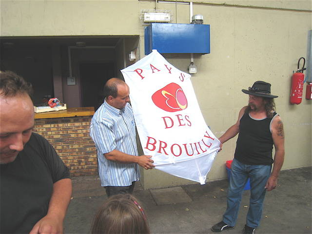
Pour remercier les vignerons, un cerf-volant a été réalisé par Marc Devize, aux armes de la nouvelle confrérie qui réunit Brouilly et Côtes de Brouilly...

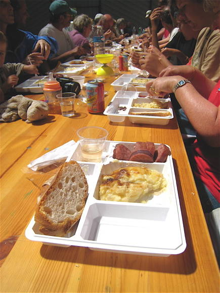
Le déjeuner est servi généreusement : saucisson chaud avec sauce... au vin, évidemment, gratin dauphinois, fromage, gros pain paysan et pâtisserie... boisson à volonté, bien sûr !

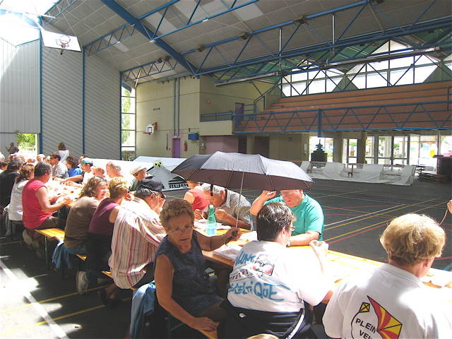
Déjeuner dans le gymnase, évidemment, y a plus de barnums dehors... Mais le soleil tape encore dur à travers les verrières !

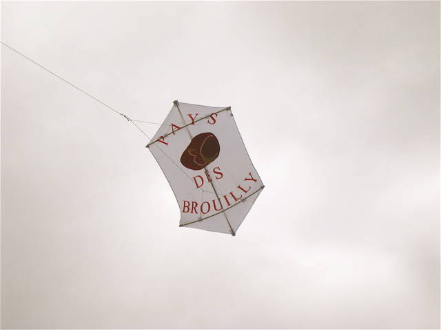
Le vent devient bon, on prouve par le vol que le cerf-volant des Brouilly n'est pas une maquette d'exposition !

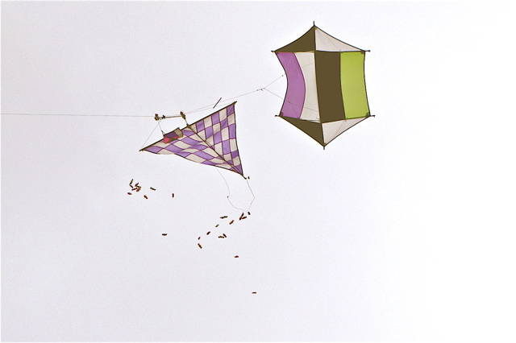
Un cervoliste très actif fera aussi des lâchers de bonbons pour les enfants... (Photo Marianne Venant).

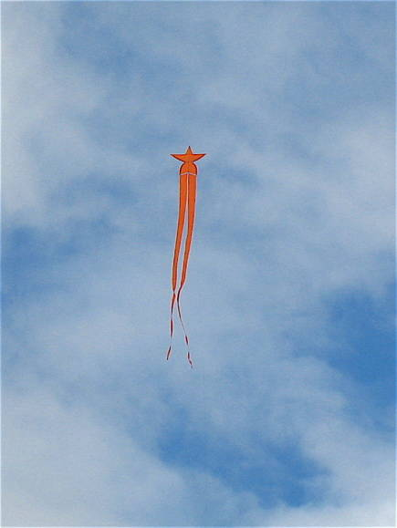
Guy, de Vent de Folie, fera voler son Folyang dans un vent d'abord très fort, puis qui ira en décroissant mais permettra de voler jusqu'au soir ! Seuls les décollages, derrière les arbres, posent problèmes jusqu'à une trentaine de mètres de haut...

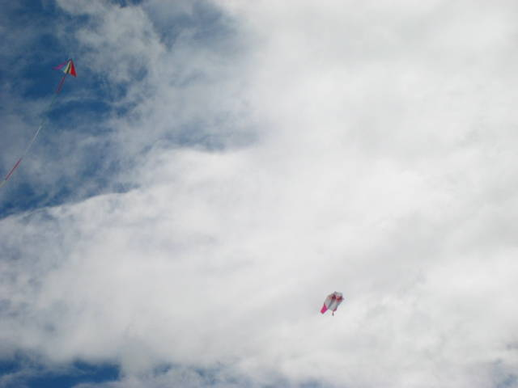
Les cieux ne seront pas très peuplés, en raison de la difficulté de décoller un cerf-volant assez résistant pour ne pas casser ensuite... François Guzman avec son delta et Jean-Claude Veillerobe avec son Polyfax ont réussi.

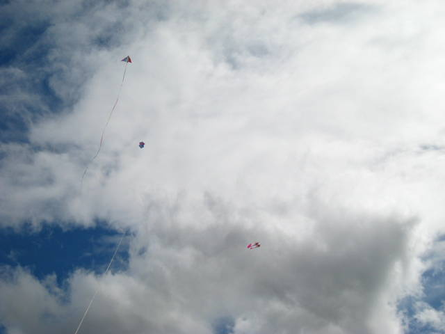
J'ai aussi monté mon Rokkaku, j'en ai assez de perdre des oiseaux...

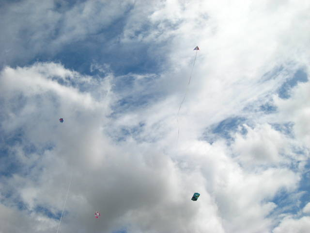
On voit aussi voler un Calomil, mais Christian n'est pas là !

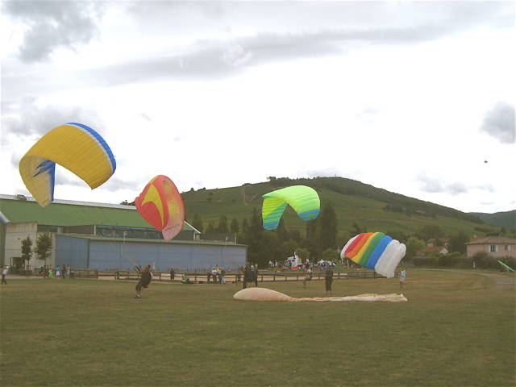
Une équipe de parapentistes fera quelques démonstrations de gonflage. C'est un peu difficile dans le vent variable au sol derrière les masques !

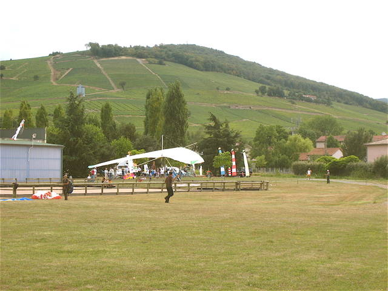
Le spécialiste du deltaplane fait aussi quelques levers d'aile en courant, mais il ne s'est même pas attaché à l'engin !

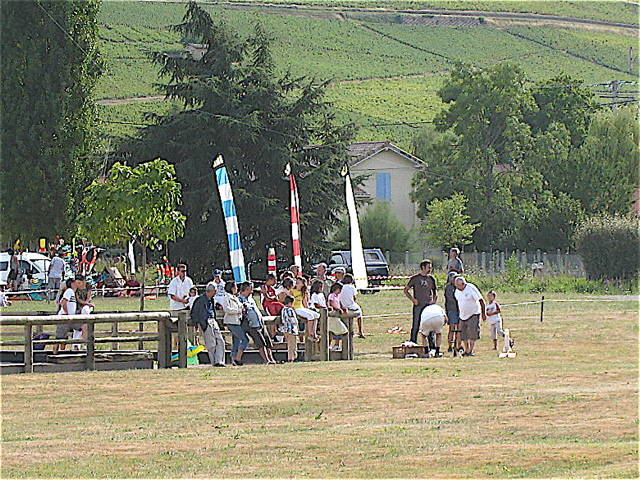
Il n'y a pas trop de monde au sol, Orsenigo peut ressortir ses fusées qui montent vers 50 m, il en perdra quand même une dans une haie touffue, épineuse et privée !

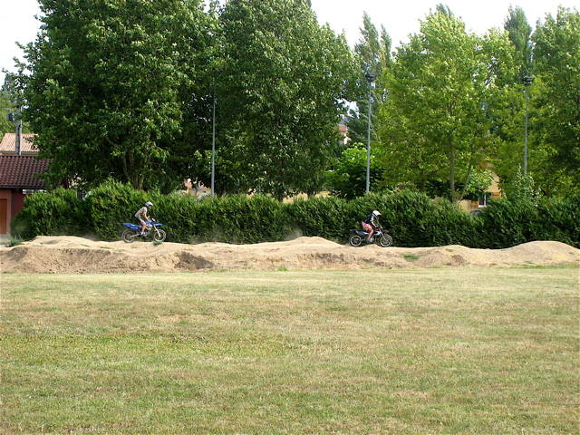
Au fond, une zone tout-terrain en terre bosselée est là pour permettre aux VTT de s'amuser. Mais maintenant, il leur faut de petites motos, les mollets ne sont plus ce qu'ils étaient...

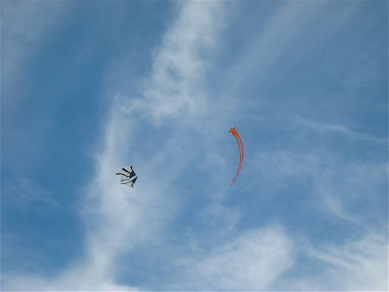
Un nouveau cerf-volant vient rejoindre les élus : Jean a pu monter son Roller qui souffrait trop dans le vent fort initial...

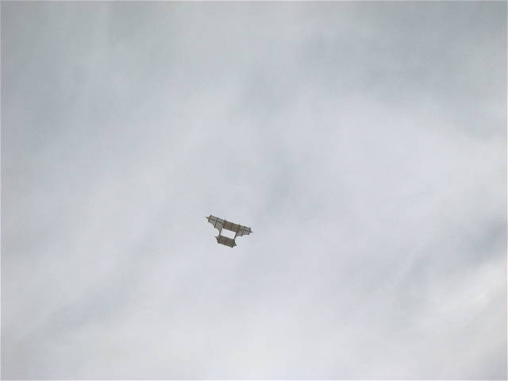
Jean-Pierre Schaeffer a courageusement monté son Cody, il décolle comme une fleur et volera nickel... Son grand Chula sera exposé dans le hangar, mais je ne l'ai pas vu voler...

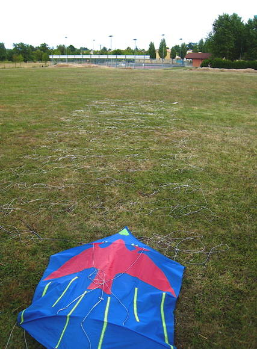
En fin d'après-midi, je descends mon Rokkaku pour raison personnelle, on ne peut pas le laisser sans surveillance de ce temps... Mais je ne pourrai jamais le remonter !

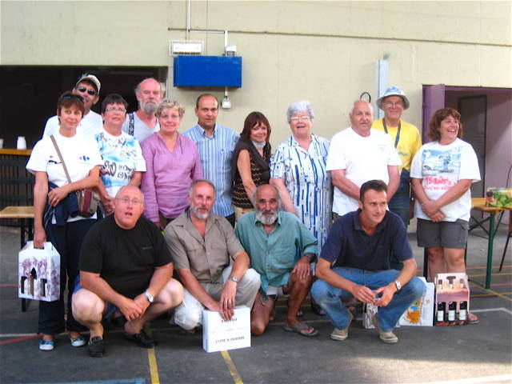
Avant les départs en masse, les vignerons offrent des lots aux candidats élus par Gaby : les premiers venus, les plus méritants, etc. J'en ai un comme premier inscrit au festival...

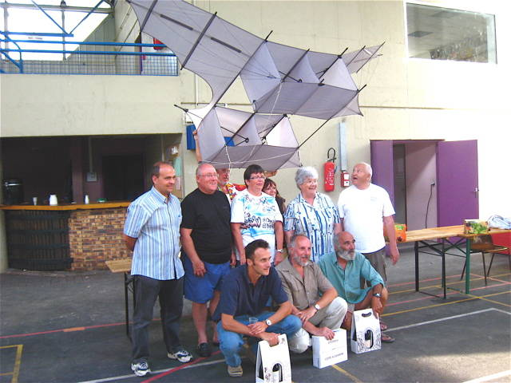
Ensuite, on fait diverses photos de groupes, sous l'égide du Cody de Jean-Pierre pour marquer l'image de l'empreinte cervolistique...

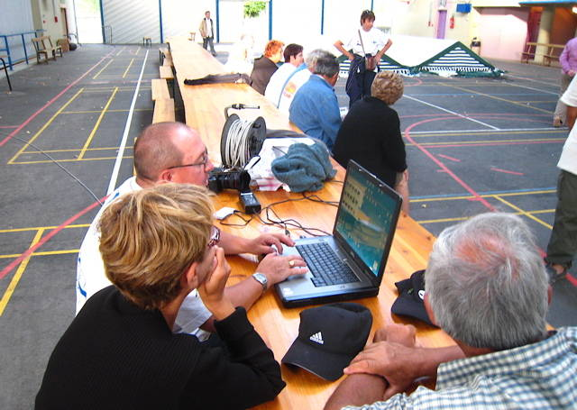
Ensuite, on passe le temps : longue séance d'échange de photos entre les diverses cartes et ordinateurs...

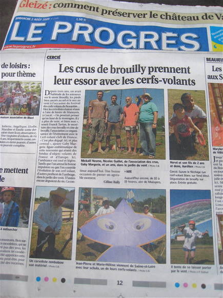
Le journal a publié un assez volumineux article avec les photos et les interviews recueillis hier ! La commune, et son maire qui est venu un bon moment, seront contents, j'espère...

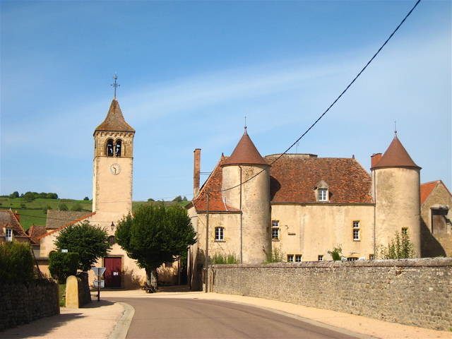
Après ces dures journées, je dors sur place. Lundi matin, je ferai route pour rejoindre via Nevers mes pénates, en traversant le beau pays de Brionne et son architecture romane qui fait suite au Beaujolais...

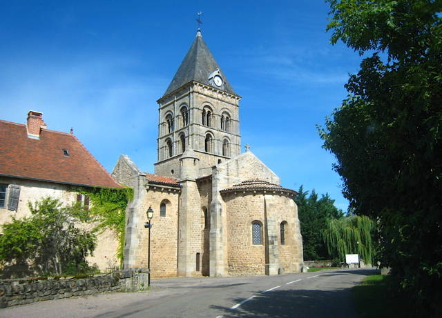
Dans l'ensemble les églises sont vraiment splendides !
Brouilly 2009 : Le nouveau terrain est moins pittoresque que l'ancien, mais de facture plus habituelle ! On déplore seulement un peu beaucoup de masques : bâtiments, haies d'arbres de 20 m qui ont rendu les vols difficiles et relativement peu nombreux par ces vents déjà irréguliers par eux-mêmes. Mais l'accueil reste inoubliable par son esprit et sa qualité !